奥干 |
サイド１•シャングリラで生活のために仲間たちとジャンク屋をしていた少年。アーガマが入港してきたことがきっかけとなり、ネオ•ジオンとの戦いに参加することとなる。ΖΖガンダムのメインパイロット。 |
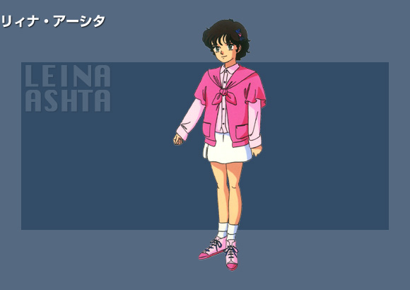 |
ジュドーの妹。ジュドーが無鉄砲なせいか、しっかりとした責任感の強い少女であるが、それが災いしてルーと間違えてグレミーにさらわれるはめになる。 |
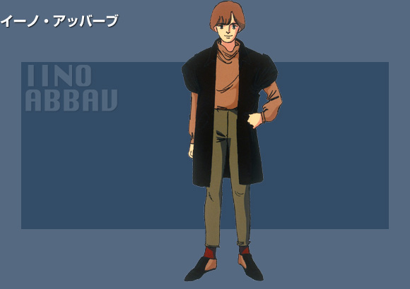 |
シャングリラでジュドー達とジャンク屋をやっていた。ジュドーのクラスメイトで仲が良い。ドダイやメガライダー、コア•トップやコア•ベースなどのサポートメカに乗るが、ネェル•アーガマに移ってからはブリッジにつめることが多かった。 |
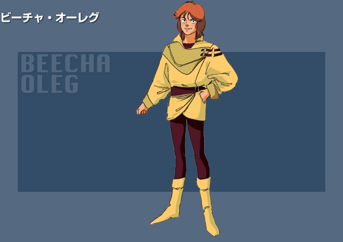 |
シャングリラではジャンク屋５人組のリーダー格だった。ひがみっぽいところがあり、ジュドーと衝突することが多い。楽して儲けようとしてエンドラと内通し、アーガマを売り飛ばそうとしたこともある。ＭＳで出撃するときは百式に乗ることが多い。 |
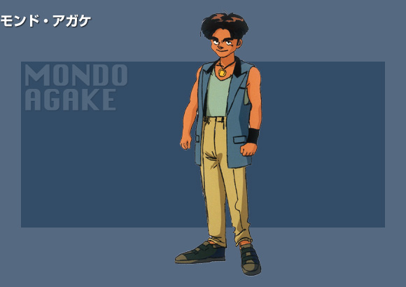 |
シャングリラのジャンク屋仲間。シャングリラのジャンク屋仲間。ビーチャの子分のような存在。電子系統のメカに強く、搭載機の整備を行う事もあった。パイロットとしてはメガライダーかガンダムＭｋ-II に搭乗する事が多い。 |
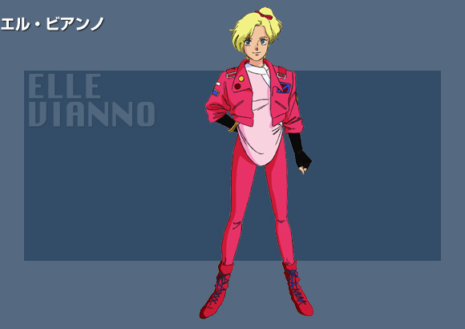 |
シャングリラのジャンク屋仲間で情報集めを担当していた。一人っ子であり、妹思いのジュドーに肩入れするうち に惹かれていく。持ち前の行動力で、ジュドーやビーチャの不在時にはリーダーシップを発揮する事も。ルーとは喧嘩友達であるが、Ｍｋ－IIを駆ってのコン ビはなかなかの強さであった。 |
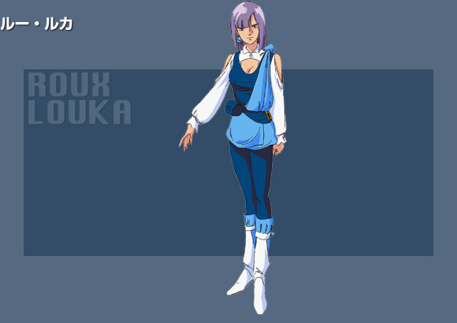 |
ラビアンローズからコア•ファイターを運んできた少女。エゥーゴに正義があると信じている志願兵だった。その立場の違いと年上であること、そして気丈な性格から、ジュドー達とは最初はうまくいかなかったが徐々にうち解けていく。 |
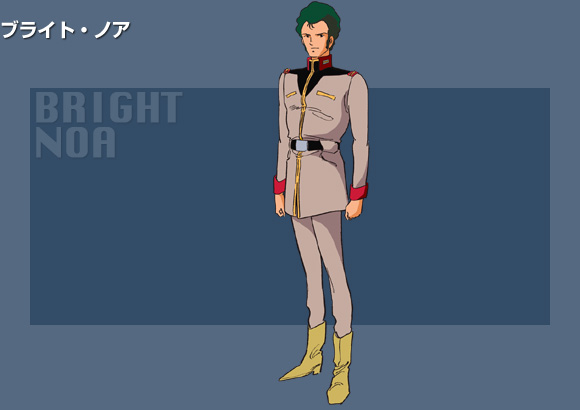 |
アーガマの艦長。傷ついた艦を入港させたシャングリラにて出会った少年•ジュドーに第三のニュータイプ戦士としての力を見た。 |
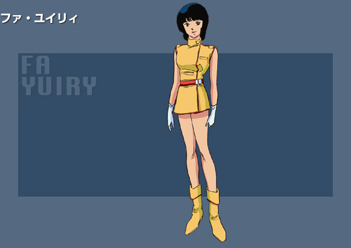 |
唯一人の正規パイロットとしてメタスやΖガンダムで活躍した。出港後の戦闘でメタスのコントロールを失い、シャングリラへ戻った。 |
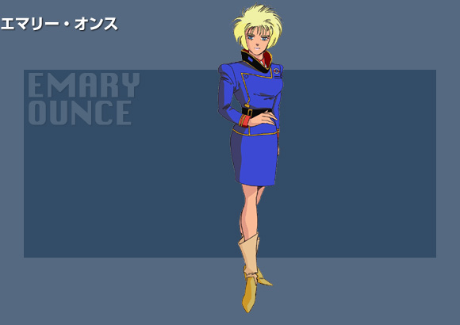 |
ラビアンローズの艦長代理。ブライトに熱を上げている。ネェル•アーガマと接触するため不用意に信号弾を撃ったり、仕事中に恋占いをしたり、果ては艦のコースまで占いで決めようとする一面もみられる。 |
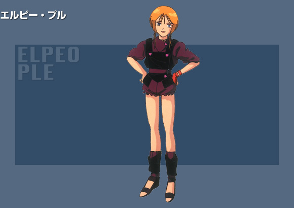 |
グレミー配下のニュータイプ戦士。キュベレイＭｋ－IIに搭乗する。ジュドーを慕い、アーガマの居候のような形でジュドー達と生活し、たびたび仲間の危機を救う。 |
新吉翁 |
ネオ•ジオンの摂政で、ミネバの後見人。彼女がザビ家再興に執着する真意は、ザビ家に仕えて死んでいった姉の復讐である。そのため、ザビ家を手玉に取り、新たな血をザビ家へ加えたネオ•ザビ•ファミリーを作り出そうとする。 |
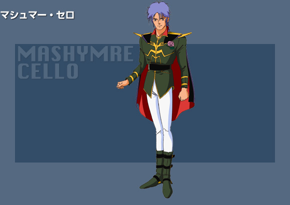 |
サイド１方面軍•戦艦エンドラの艦長兼ＭＳパイロット。ハマーンから賜った薔薇をコーティングして胸に飾っている。 |
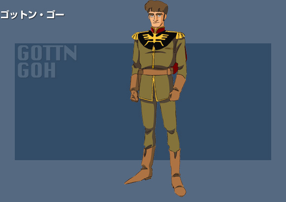 |
マシュマーの部下だが、彼の更迭後はあっさりとキャラに乗り換える。お人好しのマシュマーの代わりに裏工作をし、アーガマ内通者との接触などの危険任務もこなす。 |
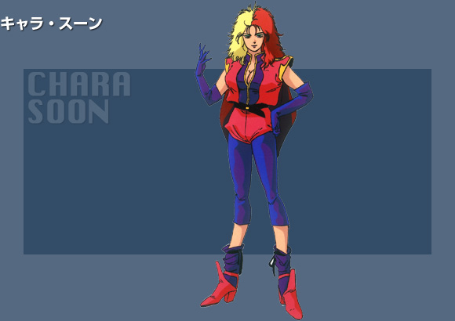 |
失敗続きのマシュマーの監視役としてハマーンに送り込まれた士官。Ｒ•ジャジャのパイロットだが、ＭＳに乗る と興奮するので本人はあまり乗りたがらない。マシュマー更迭後にエンドラを預かるが、ムーンムーンでの戦いで失い、自分もアーガマの捕虜となってしまう。 ニュータイプの素養があるらしく、ジュドーと共振現象を示す。 |
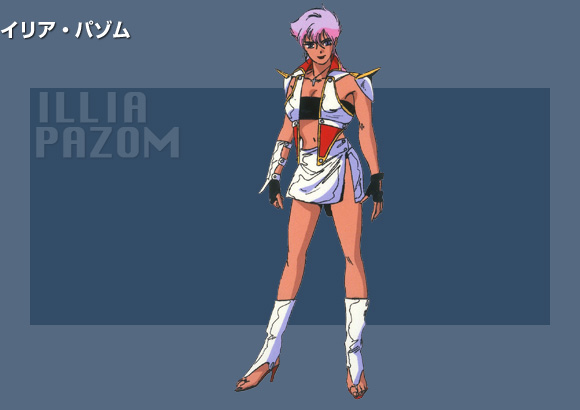 |
マシュマーの副官でありリゲルグのパイロット。ニュータイプなのか、ジュドーと共鳴現象を起こす。タイガーバウムでハマーンを救出してからは、強化し過ぎたマシュマーの監視役を命じられた。 |
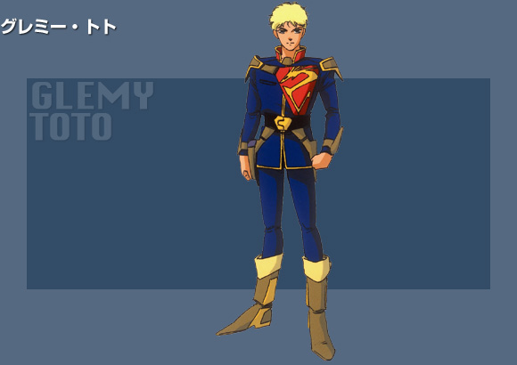 |
ハマーンのお気に入りの兵士、という触れ込みでマシュマーの部下として配属された。 |
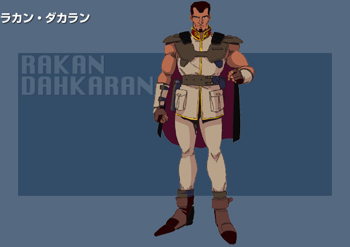 |
ミンドラでアーガマに体当たりをかけようとするなど、豪放かつ部下泣かせの戦法をとる武人。地球ではティター ンズから接収したメロウドに乗り、コロニー落としから逃れようとする人々の足止めをおこなう。コロニー落としについてハマーンから親書で通知を受けるほど に信用されていたが、戦争後の報奨につられたのか、結局グレミー側につく。 |
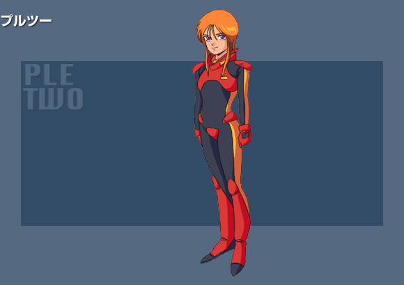 |
グレミーの切り札、ニュータイプ部隊のリーダー格の少女。プルとそっくりであり、双子であるともクローンであ るとも言われている。後天的な操作によりプルの性格の激しい部分だけを引き出されている。ニュータイプ能力が高く、クイン•マンサは実質彼女のために開発 されたものである。 |
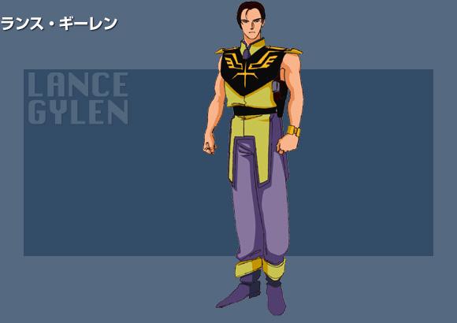 |
ガズエルに乗る髪の短い双子の片割れ。ニーとともにロイヤルガード（宮殿親衛隊）の一員である。強化されたキャラの監視役で、ラカンの駆るドーベン•ウルフの攻撃から彼女をかばって死亡。 |
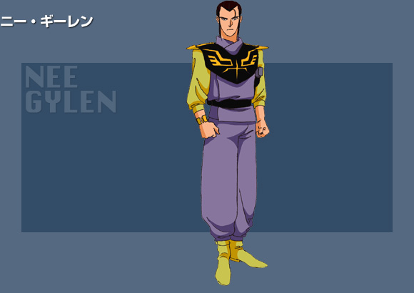 |
ガズアルに乗る髪を束ねた双子の片割れ。ランスとともにロイヤルガード（宮殿親衛隊）の一員である。グレミーのニュータイプ部隊に倒される。 |
其他 |
民族解放を目指す、アフリカ独立戦線のリーダー。「お山の大将」的なところがある。ネオ•ジオンと結託してガ ルダーヤを占拠しようとした。オウギュストを利用するつもりが逆に利用されていた。「ＭＳはパワーではなく機動性」とばかりにドワッジでΖΖガンダムに挑 むが、圧倒的なパワーのビーム•ライフルの前に倒れる。 |
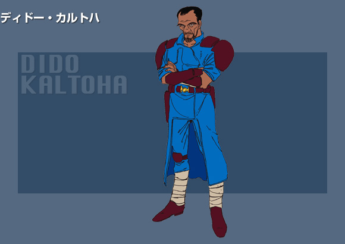 |
トアレグ族で構成される、アフリカ独立戦線•青の部隊の隊長。グレミーを助ける条件としてガルダーヤの地下街のコントロール部の捜索を強要。単身飛び出したエロの援護のためゲルググで出たが、Ζガンダムに撃破され、グレミーに青の部隊を託し倒れる。 |
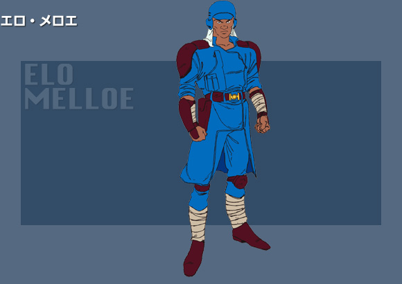 |
青の部隊の兵士で血気盛んな若者。ガルダーヤに近づくジュドー達の迎撃にディザート•ザクで出るが、ガンダムＭｋ－IIに撃墜され後退。オウギュストと結託してガルダーヤを襲う仲間の、志を忘れた戦いぶりに憤慨し、ゲルググで戦う。 |
|
「砂漠のロンメル」と呼ばれた、一年戦争のアフリカ戦線の勇士。戦争後、砂漠の街に潜み時を待っていたが、ネオ•ジオンの降下に呼応して、ガンダムを倒すべく兵をあげる。 |
|
ムーンムーンのヒカリ族の教祖。ラサラの双子の姉。見分けるペンダントをしている。「光の教え」を外に広めるために救世主と宇宙船を求め、アーガマとエンドラを呼び寄せる。 |
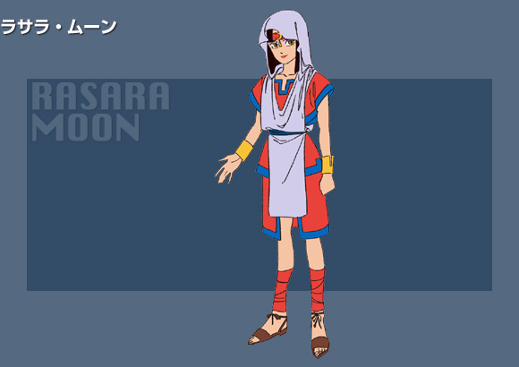 |
サラサの妹。ロオルに操られている姉を止めるためにレジスタンスを組織している。 |